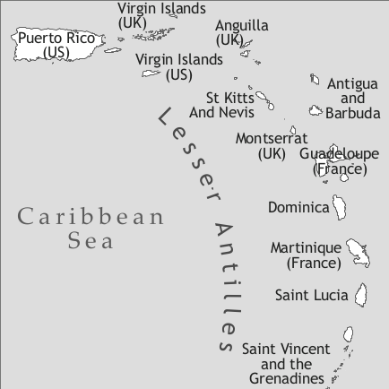
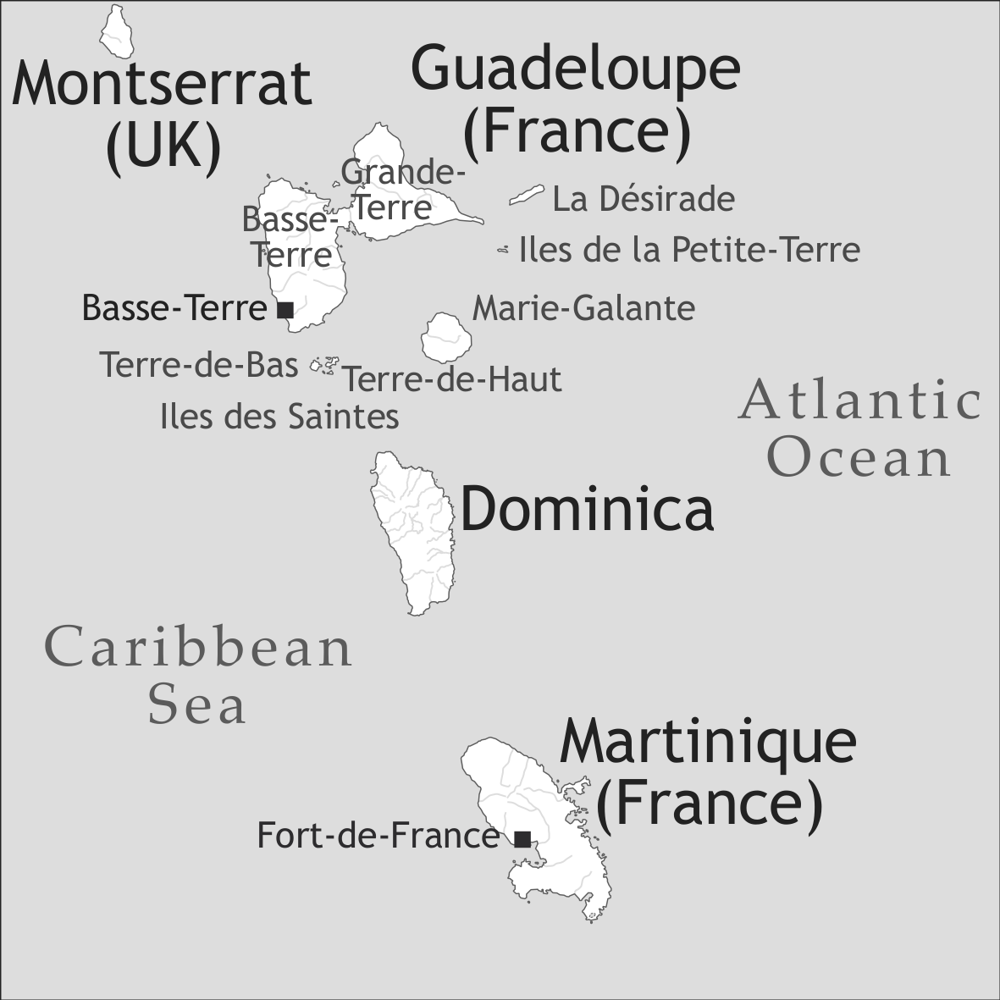
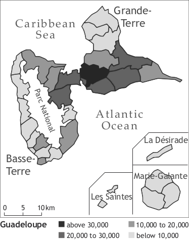
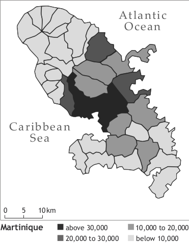

by Serge Colot and Ralph Ludwig




Guadeloupean Creole and Martinican Creole are French-based creole languages which are so similar to each other that they are treated together in this article. They are spoken on the Caribbean islands of Guadeloupe and Martinique (both belonging to the French Antilles).
Guadeloupe and Martinique have different geographic and administrative identities. They are French overseas departments, and they are both Ultraperipheral European Regions located in the Americas. They are located in the Caribbean Sea, 6,200 km from France, 600 km from the northern coast of South America, and 2,200 km from the southern coast of the United States.
Guadeloupean Creole is spoken by some 400,000 speakers in the Guadeloupean Archipelago, which comprises six inhabited islands spread over 1628 km2: Basse-Terre and Grande-Terre (continental Guadeloupe), Marie-Galante, Terre-de-Haut and Terre-de-Bas (les Saintes), and la Désirade.
Martinican Creole is spoken by some 400,000 speakers in Martinique, a 1,100 km2 island 200 km south of Guadeloupe.
The number of diaspora speakers in France (mainly Paris, Bordeaux, Toulouse), French Guiana, Montreal, and Panama is approximately 200,000 for both Guadeloupean and Martinican Creole, raising the total number of speakers to 600,000 for each variety.
Columbus discovered Guadeloupe in 1493 on his second journey to America and baptized the island Santa Maria de Guadalupe de Estremadura; he dropped anchor in Martinique in 1502 during his fourth journey and called this island Joannacaira. True colonization of these islands did not begin until 1635, however, when Charles Liénard de l’Olive and Jean du Plessis d’Ossonville took possession of Guadeloupe and when Pierre Belain d’Esnambuc took possession of Martinique on behalf of the Compagnie Française des Îles d’Amérique.
The indigenous population, the Caribs, were neither willing nor able to accept the burden of forced labour that the French desired to place upon them. This is stated in a travel account by Père Jean-Baptiste Labat, an adventurer priest who sailed up and down the Antilles from 1693 to 1705:
These kinds of people are lazy and unpredictable to the extreme. Infinite gentleness is required for their treatment: They cannot stand being commanded around and one has to be careful to not correct them or look at them from the side when they make any kind of mistake; their pride in this matter is inconceivable. This is where the following proverb comes from: To look at a Carib from the side means to beat him, and to beat him means to kill him or to risk being killed. They only do what they want, when they want and how they want it (…) (Labat 1742; II: 138; translation Melanie Revis)
In the logic of colonial expansion, the goal of which was agro-industrial exploitation (sugar, coffee, cocoa, spices), the indigenous population was quickly eradicated:
The policy pursued by the English or the French is not in any way different from that of the Spanish in method and objective. Above all, it is concerned with wiping out the indigenous, or, better said, to drive them back to certain islands that serve as reserves. (Jacques-Adélaïde Merlande, 1981: 73; translation Melanie Halpap)
The hostile relations between Amerindians and Europeans gave rise to several confrontations before a French-Anglo-Caribbean treaty was signed in 1660; this treaty assigned the two insular reserves, Saint Vincent and Dominica, to the few surviving Amerindians.
However, the introduction of sugar cane and its growing importance in the cultivated fields and for profits required a sufficient number of labourers; these labourers were supplied continually through the African slave trade with the West African coast. From the second half of the 17th century onwards, slave trade completely changed the demographic and social structure of the Antilles: In 1678, there were 27,000 black slaves in the French Antilles; by 1780 the number had risen to 673,000 (Sala-Molins 1987: 14–16).
The new social structure which emerged led to big linguistic differences between the dominating white minority and the dominated black majority. It was probably during this transitional period that the Creole language was born in the Antilles.
Moreover, Labat (1742, I: 98) attested the existence of a new language which was apparently not a pidgin, that is to say, not a rather unsystematic mixed language, but a language used by the slaves which had a fixed form:
I had the extreme urge to ask our Negroes about a lot of things that I saw and about which I wanted to be instructed; but I had to get rid of that desire because they were new Negroes who only spoke a corrupted language that I could hardly understand at all, but to which one soon becomes accustomed. (Labat 1742, I: 98)
The Negroe that I was given was a creole who had already served other Curés; he knew the area where I went, he spoke French, and, besides, I was already used to the usual gibberish of the Negroes. (Labat 1742, I: 135; translation Melanie Halpap)
Slavery in the French colonies was only abolished in 1848. At that time, there was a need in the Antilles for cheap labourers who would be able to take over from the freed Blacks. As a consequence, immigration from the poorest areas of India began: Between 1850 and 1914, 25,509 Indians arrived in Martinique, up to 38,000 in Guadeloupe, and 8,000 in French Guiana (Pluchon 1982: 427).
Even if the Indian indentured workers, the last component of the ethnic mosaic in the Antilles, did not participate, properly speaking, in the process of linguistic creolization, they contributed significantly to the Creole lexicon: There are a considerable number of Indian loanwords mainly concerning the domains of fauna, flora, cuisine, religion, and music.
The Law of Departmentalization from 19th March 1946, which has often been referred to as the Law of Assimilation, changed the status of Martinique and Guadeloupe to overseas departments (départements d’Outre-mer). With this title, the islands had to submit to the same laws and decrees as France as well as to the same social organization and the same administration forms. Free public schooling, secular and obligatory, was introduced and established the French language as effectively the only official language.
While Creole was the only language of most Antilleans until the middle of the 20th century, with most people being practically monolingual in Creole, there has now been a progressive move towards coexistence with French up to the point that French has become the predominant language.
In Guadeloupe and Martinique, the difficult coexistence between Creole and French, that is to say, between a stigmatized language and a prestigious language, is often described as a diglossic situation, although this interpretation does not entirely explain the linguistic reality (cf. Hazaël-Massieux 1978; Ludwig et al. 2006). Some works have highlighted the conflicting dimensions arising out of this contact between Creole and French (cf. for example the general introduction in Bernabé 1983). Guadeloupean and Martinican Creole are thus interacting with French in a dominant contact situation (for the distinction between dominant and non-dominant contact situations, see Gadet et al. 2009).
As a result, Creole copies are frequent in oral/informal registers of Guadeloupean or Martinican French (see Ludwig et al. 2006). In (1a), we see that Guadeloupean French has borrowed faire ‘to do’ (contrasting with obliger Standard French in 1c), and in (2a), we see that Martinican French has borrwed dans ses mains (contrasting with Standard French chez lui in 2c) (Ludwig 1996c: 64ff).
(1) a. Guadeloupean French:
Thomas, ne me fais pas te taper
Toma, pa fè mwen ba-w kou
Thomas neg faire 1sg for-2sg hit
‘Thomas, don’t make me hit you.’
c. Standard French:
Thomas, ne m’oblige pas à te taper
‘Thomas, don’t force me to beat you.’
(2) a. Martinican French:
Ma patronne achète dans ses mains.
Patwòn-mwen ka achté an lanmen’y.
boss-1sg prog buy in hand
‘My boss buys at his shop.’
c. Standard French:
Ma patronne achète chez lui.
‘My boss buys at his shop.’
On the other hand, French elements are often copied into Creole, above all in more formal/written situations, when Creole speakers lack adequate expressions in Creole. An example is (3) (Ludwig et al. 2001: 124ff), where the elements from French are in boldface and ° indicates intonational segments.
(3) zò di tout biten°semer la division kon sa°la panique°moun pa ka/ zò zò vé atenn pétèt lendépandans par œ/ par la voie de de la britalité lasovajri la bagarre°lé biten kon sa°
‘You say a lot of things to deepen the division in this way, the panic, the people don’t/ you may want to reach the independence through uh, through means like brutality, savagery, riots, these kinds of things.’
This situation of contact and competition between Creole and French has caused the two languages to interact, and this has led to French linguistic features being taken over into Creole. Likewise, various changes in usage and in the competence of Creole speakers can be noted nowadays, which, over the years, have almost led to the disappearance of monolingual Creole speakers and to a general tendency towards a linguistic asymmetry in the sense that the people are more proficient in French than in Creole.
Today, there is a new debate about the terms “mother tongue”, “first language”, “second language”, and the levels of competence required for such a categorization (cf. e.g. Bellonie 2009). The debate about possible changes of competence and the realization that there is basically only Creole-French bilingualism has led to talk about decreolization. Thus, Pustka (2006: 82) believes she is able to predict that “the death of Creole seems unavoidable”; this is an unjustified hypothesis in our eyes, in view of the great vitality that Creole is enjoying, especially in Guadeloupe.
Since the school was the main instrument which favoured the dominance of French, Antillean intellectuals and representatives of culture wanted to restore the continuity between the traditional socio-family environment and the educational system and therefore introduced Creole in schools. The political activism of the Martinican and Guadeloupean activists and culture representatives, backed up by strong political action, led to the introduction of a degree programme of Regional Languages and Culture at the University of the French West Indies and Guiana in the 1990s, the introduction of the teaching of regional languages and cultures in primary and secondary school by the Ministry of Education in 1995 and the creation of a recruitment concours for teachers for Regional Languages and Culture (cf. e.g. Reutner 2005).
It must be pointed out that the distribution of the population, which is quite different in Guadeloupe and Martinique, also affects linguistic practices. Thus, the geographic expanse of the Guadeloupean archipelago and the relatively balanced population distribution bring about a certain heterogeneity of Guadeloupean Creole. Although no real study has been conducted on this question, the majority of Guadeloupeans identify the Creole of Basse-Terre as different from that of Grande-Terre, of Saintes, or of Marie-Galante, the latter having undergone less influence from French.
By contrast, great homogeneity can be observed in Martinican Creole; this can be fully accounted for by the concentric population distribution: The four villages in the middle of the island (Fort-de-France, Schœlcher, Lamentin, Robert) comprise almost half of the population. Moreover, the towns in the north and south of Martinique, which have a considerably smaller population, are experiencing ongoing migration towards the geographical centre, which is also the administrative, socio-economic, and socio-cultural centre.
Map 3. Distribution of the population in Guadeloupe and Martinique
The inventories of vowels and consonants are shown in Tables 1 and 2. From a diachronic point of view, the following observations explain very well some of the modern-day features of the phonological systems of Guadeloupean and Martinican Creole:
(i) The varieties of French that were transported to the West Indies during the 17th century retained the pronunciation of the “aspirated h”; while it is still retained in modern Creole, it has been lost in Standard French: Cf. French haïr /air/ vs. Creole hay /haj/ ‘hate’.
(ii) The French front rounded vowels have been replaced in Creole by their unrounded front vowel counterparts: French peut [pø] > Creole pé [pe] ‘can’. In some local varieties of Guadeloupe, some speakers essentially of European phenotype have nevertheless retained the use of the front rounded vowels from French: These speakers are mainly found in Saintes (Terre-de-Haut and Terre-de-Bas), in Désirade, and in the south of Basse-Terre.
(iii) There is a phonological opposition between (full) nasalization and partial nasalization: van ‘wind’ /vã/ vs. vann ‘to sell’ /vãn/; in Standard French, partial nasalization today is a non-phonological phenomenon only pertaining to contextual variation.
|
Table 1. Vowels |
|||
|
front |
central |
back |
|
|
close |
i |
u |
|
|
close-mid |
e |
o |
|
|
open-mid |
ɛ, ɛ̃ |
ɔ, ɔ̃ |
|
|
open |
a, ã |
||
A more generalized use of nasalization can be observed in Martinican Creole, which is both progressive (before a nasal consonant) and regressive (after a nasal consonant); in Guadeloupean Creole it is only progressive. Coming from French words, Martinican Creole has come to have progressive nasalization of the close-mid and open-mid vowels /e/, /o/, /ɛ/, and /ɔ/ and the central open vowel /a/ when these are placed before a nasal consonant and has come to have regressive nasalization of the previous mid-closed vowel /e/ when it follows a nasal consonant: French femme /fam/ > Creole fanm /fãm/ ‘woman’, French aimer /eme/ > Creole enmen /ɛ̃mɛ̃/ ‘to love’, French fumer /fyme/ > Creole fimen /fimɛ̃/ ‘to smoke’, French crême /krɛm/ > Creole krenm /kɣɛ̃m/ ‘cream’, French rhum /rɔm/ > Creole wonm /ɣɔ̃m/ ‘rum’. Guadeloupean Creole has also come to have progressive nasalization of these vowels before a nasal consonant, but does not have the phenomenon of regressive nasalization of the preceding close-mid vowel: Martinican fimen /fimɛ̃/ ≠ Guadeloupean fimé /fime/ ‘to smoke’, Martinican /ɛ̃mɛ̃/ ≠ Guadeloupean enmé /ɛ̃me/ ‘to love’, Martinican goumen /gumɛ̃/ ≠ Guadeloupean goumé /gume/ ‘to fight’.
Otherwise, the phonological patterns of Guadeloupean and Martinican Creole can be summarized in the following way:
(i) They both have the same vocalic triangle with seven oral vowels and three nasal vowels.
(ii) They both display the same consonant inventory with twenty-four consonants divided into four manners of articulation and seven places of articulation.
|
Table 2. Consonants |
||||||||
|
bilabial |
labio-dental |
labio-velar |
post-alveolar |
palatal |
velar |
glottal |
||
|
plosive |
voiceless |
p |
t |
c |
k |
|||
|
voiced |
b |
d |
ɟ |
g |
||||
|
nasal |
m |
n |
ɲ |
ŋ |
||||
|
fricative |
voiceless |
f |
s |
ʃ |
h |
|||
|
voiced |
v |
z |
ʒ |
ɣ |
||||
|
approximant |
ɥ |
l |
j |
w |
||||
Word stress is always on the last syllable. Phrase and sentence stress is also in final position.
There is an orthography which has been developed based on the proposals (and promoted by creolists) of the former GEREC-F in Martinique/Schœlcher and slightly modified for Guadeloupean Creole (see Ludwig et al. [1990] 2002). Jean Bernabé proposed further modifications in Bernabé (2001).
The following most striking conventions are used in the orthography: Full vowel nasalization is rendered by <n> following the vowel, partial nasalization by <nn> following the vowel, /u/ is rendered by <ou>, and /ŋ/ is written <ng>. There are very few differences between Guadeloupean usage and Martinican usage:
(i) the oral open-mid front vowel /ɛ/ is always written <è> in Guadeloupean Creole (bè ‘butter’, bèf ‘cow’), while it is written <è> in open syllables and <e> in closed syllables in Martinican Creole (bè, bef),
(ii) the oral open-mid back vowel /ɔ/ is always written <ò> in Guadeloupean Creole (lò ‘gold’, lòd ‘order’), while it is written <ò> in open syllables and <o> in closed syllables in Martinican Creole (lò, lod)
(iii) /j/ is always written <y> in Guadeloupan Creole (vyé ‘old’, yè ‘yesterday’, lay ‘garlic’), while it is written <y> only at the beginning or at the end of a syllable and <i> in the middle of a syllable in Martinican Creoles (vié, yè, lay).
Even if the orthographic systems sketched above are widely used in Guadeloupe and Martinique, it must be mentioned that the debate on Creole orthography is not over and that some linguists have made alternative proposals.
The majority of lexical items are not uniquely assigned to particular word classes such as noun, verb, adjective, or adverb. Changes from one word class to another are most frequently not signaled by derivational markers. Certain meanings are associated with preferred functions (words denoting durable objects tend to be nouns, words denoting actions tend to be verbs, etc.), but alternative uses are possible, as shown in examples (4a–b) and (5a–b); cf. Ludwig (1996a: 140; 1996b). (Note that in the following, where an example is not specifically marked as being from Guadeloupean (gua) or Martinican (mar) Creole, the example is valid for both languages. All examples without source indication were constructed by the first author, Serge Colot, a speaker of Martinican Creole.)
(4) a. An ka bwè kafé.
1sg prog drink coffee
‘I am drinking coffee’
b. An ka kafé.
1sg prog coffee
‘I am “coffeeing”.’
(5) a. An ka vwè on mabouya.
1sg prog see indf gecko
‘I see a gecko’
b. Fanm-la ka mabouya.
woman-def prog gecko
‘The woman is “geckoing”.’
Nouns are morphologically invariable, e.g. on boug, dé boug ‘one man, two men’; dlo ‘water’; diri ‘rice’. Many nouns contain an initial element that goes back to one of the French articles le, la, les, du, but these elements are inseparable and are part of the root, e.g. zétwal/zétwèl ‘star’ (< French les étoiles), zwazo/zwézo/zozyo ‘bird’ (< French les oiseaux), dlo ‘water’ (< French de l’eau).
Natural gender can be expressed by adding mal ‘male’ and fimèl ‘female’ to a given noun:
(6) on fimèl chyen
INDF female dog
‘a female dog’
(7) on mal chat
INDF male cat
‘a tomcat’
Number is expressed most frequently by the article system (see Table 3).
Definite and indefinite articles are shown in Table 3 (cf. Ludwig et al. [1990] 2002: 21; Damoiseau 1999: 33ff):
|
Table 3. Articles |
||
|
singular |
plural |
|
|
definite |
-la (gua) -a/-an/-la/-lan (mar) |
sé...-la sé…-a/-an/-la/-lan (mar) |
|
indefinite |
on (gua) an (mar) |
ø |
|
emphatic indefinite |
yon (gua) yan (mar) |
dé/lé [in some cases: dé kalité/lé kalité, chak sé, etc.] |
The definite article functions both as an anaphoric or deictic marker (it indicates that the referent denoted by the noun has already been introduced into the discourse or that it is supposed to be known by the listener), and as a number marker (singular-plural). It is postposed in the singular and is both preposed and postposed (“circumposed”) to the noun in the plural.
(9) Sé kannot-la ay an lanmè. (mar)
pl ship-def go in sea
‘The ships have gone out to sea.’
If the noun is combined with a preposed or postposed adjective, the definite article shows the same syntactic behaviour – it follows the noun phrase in the singular and is circumposed to the noun phrase in the plural:
(11) Sé gwo boug-la ka lévé pwa. (gua)
pl big guy-def prog lift dumb-bell
‘The big guys are lifting up the dumb-bells.’
(12) Boug malélivé-a ka jouré. (mar)
guy bad.mannered-def prog hurl.insults
‘The bad-mannered guy is hurling insults.’
(13) Man wouvè sé rad sal-la ki té adan térin-lan. (mar)
1sg spread.out pl cloth dirty-def rel pst in bowl-def
‘I have spread out the dirty clothes that were in the bowl.’
The indefinite article indicates that the concept expressed by the noun has been newly introduced into the discourse and that the speaker does not presuppose that the hearer knows it. Moreover, the concept in question does not (necessarily) have a defined and localized referent in reality. The indefinite article is restricted to the singular and precedes the noun phrase (cf. examples 14 and 15). In the plural no marking is used (16):
(14) An ni on loto nèf. (gua)
1sg have indf car new
‘I have a new car.’
(15) I pran an vyé chimen. (mar)
3sg take indf bad path
‘He took a bad path.’
(16) Té ni Ø moun an lari-a. (mar)
pst exist indf people in street-def
‘There were people on the road.’
There are also emphatic indefinite article forms, as shown in (17) for singular contexts.
(17) I pran yon so! (gua: emphatic form)
3sg take emph.indf.sg bound
‘He fell really badly.’
The emphatic forms in the plural indicate a quantitative restriction and imply specification through a relative clause or a functional equivalent in most cases (cf. examples 18 and 19):
(19) Té ni lé kalité gwo woch an chimen-an! (mar)
pst have emph.indf.pl big rock in road-def
‘There were big rocks on the road.’
Pronouns: Guadeloupean and Martinican Creole do not have a politeness distinction in pronouns; however, they distinguish a dependent and an independent form in the first, second, and third person singular subject pronouns, as shown in Table 4.
|
Table 4. Personal pronouns |
||||
|
dependent personal |
independent personal |
object personal |
adnominal possessive |
|
|
1sg |
an/mwen (gua) man/mwen (mar) |
mwen |
-mwen/-an (gua) -mwen (mar) |
-mwen/-an (gua) -mwen (mar) |
|
2sg |
ou |
vou (gua) wou (mar) |
-vou/ ‘w (gua) -ou/ ‘w (mar) |
-vou/ ‘w (gua) -ou/ ‘w (mar) |
|
3sg |
i |
li: |
‘y/ -li |
‘y/ -li |
|
1pl |
nou |
nou |
-nou |
-nou |
|
2pl |
zòt/zò |
zòt/zò |
-zòt/ -zò: |
-zòt/ -zò: |
|
3pl |
yo |
yo |
-yo |
-yo |
Dependent personal pronoun:
(20) An ka pale.
1sg prog speak
‘I’m speaking.’
Independent personal pronoun:
(21) Sé mwen ka palé.
foc 1sg prog speak
‘It is I who is speaking.’
Object pronoun:
(22) An ka ba’w li.
1sg prog give.2sg 3sg
‘I am giving it to you.’
The adnominal possessive is formed by postposing the pronoun to the possessed noun (preceded by the preposition a/an in Guadeloupean Creole, cf. Ludwig et al. 2002: 22 f.):
(23) kaz an mwen (gua) / kay-mwen (mar)
house of 1sg house-1sg
‘my house’
(24) kaz a’w (gua) / kay-ou (mar)
house of.2sg house-2sg
‘your house’
Guadeloupean and Martinican Creole have a system of independent possessive pronouns, based on the element ta(n), as shown in Table 5.
|
Table 5. Independent possessive pronouns |
||
|
possessor |
singular possessum |
plural possessum* |
|
1SG |
tan mwen (gua)/ta mwen (mar) ‘mine, the one that is mine’ |
sé tan mwen (gua)/sé ta mwen (mar) ‘mine, the ones that are mine’ |
|
2SG |
ta’w ’yours’ |
sé ta’w ‘yours’ |
|
3SG |
ta’y ’his/her’ |
sé ta’y ‘his/her’ |
|
1PL |
tan nou (gua)/ta nou (mar) ‘ours’ |
sé tan nou (gua)/sé ta nou (mar) ‘ours’ |
|
2PL |
ta-zòt/ta-zò ‘yours’ |
sé ta zòt ‘yours’ |
|
3PL |
ta yo ‘theirs’ |
sé ta yo ’theirs’ |
*only used in combination with a postposed definite article
There is a distance contrast in demonstratives in Guadeloupean Creole, illustrated in Table 6 with pronominal demonstratives (cf. Ludwig et al. [1990] 2002, 18–19):
|
Table 6. Distance contrast in demonstratives |
|||
|
proximal |
distal |
||
|
singular |
sila ‘this one’ |
sala ‘that one’ tala ‘that one’ |
|
|
plural |
séla ‘these (ones)’ |
séla ‘those (ones)’ |
|
|
sé-lasa ‘these (ones)’ |
sé-tala ‘those (ones)’ |
||
Guadeloupean and Martinican Creole distinguish between two types of verbs or predicative expressions (Ludwig et al. [1990] 2002: 24ff; Damoiseau 1999: 100ff):
Group A – Dynamic verbs: This group makes up the majority of verbs; the unmarked form of the verb (i.e. the verb form without any explicit tense-aspect markers) yields a perfective interpretation.
Group B – Stative verbs (including adjectival verbs): The unmarked form of these verbs yields an imperfective interpretation, e.g. enmé ‘to love/to like’, hay ‘to hate’, pisimyé ‘to prefer’, ni ‘to have’, vlé/vé/lé ‘to want’, pé ‘to be able to/to manage’, sav ‘to know’, konnèt ‘to know/to be able to’, plus those cases where the predicate is made up of an adjective.
To express the imperfective/progressive aspect, group-A verbs take the marker ka, while group-B verbs take the zero marker.
Group-A verbs:
(25) An ka vin. (gua)/ Man ka vin. (mar)
1sg prog come
‘I’m coming.’
Group-B verbs:
(26) I Ø enmé mwen. (gua)/ I Ø enmen mwen. (mar)
3sg ipfv love 1sg
‘He/she loves me.’
The marker té places a predicate in the past. It is always added to the aspectual value of the predicate and yields a past-before-past interpretation for group-A verbs (27) and a simple past interpretation for group-B verbs (28):
Group-A verbs:
(27) a. An té vin. (gua)/ Man té vin. (mar)
1sg pst come
‘I had come.’ (anterior té + perfective Ø)
b. An té ka vin. (gua)/ Man té ka vin. (mar)
1sg pst prog come
‘I was coming.’ (anterior té + progressive ka)
Group-B verbs:
(28) An té Ø enmé. (gua)/ Man té Ø enmen. (mar)
1sg pst ipfv love
‘I loved.’ (anterior té + imperfective Ø)
Posteriority is expressed with the marker ké, which neutralizes the opposition between Group A and B (Ludwig et al. [1990] 2002: 26):
Group-A verbs:
(29) An ké vin. (gua)/ Man ké vin. (mar)
1sg fut come
‘I will come.’
(30) Nou ké vwè. (gua)/ Nou ké wè. (mar)
1pl fut see
‘We will see.’
Group-B verbs:
(31) I ké enmé mwen. (gua)/ I ké enmen mwen. (mar)
3sg fut love 1sg
‘He/she will love me.’
The word order at clause level is Subject – Verb – Object. Divergences from SVO order have to do with focusing (see §9). Table 7 gives examples of a subjectless construction with a dummy i, an intransitive (monovalent) construction, and a (mono)transitive (bivalent) construction.
| dummy subject | agent | verb (or functional equivalent) | patient | |
|---|---|---|---|---|
| zero-valent | I | senkè. | ||
| ‘It | (is) five o’clock’ | |||
| monovalent |
Mani Mani ‘Mani |
ka jwé jwé. prog play play is playing.’ |
||
| bivalent |
Mani Mani ‘Mani |
ka manjé manjé prog eat eat is eating |
pwa-la. beans-def the beans.’ |
Source: Adapted from Ludwig et al. ([1990] 2002, 28)
In ditransitive constructions, the order of the arguments is always Subject – Verb – Recipient – Theme if the verb allows two direct objects, i.e. if we are dealing with a double-object construction. However, if the verb allows a direct object and an indirect object (the latter marked by the preposition ba), i.e. in an indirect-object construction, the order is always Subject – Verb – Theme – Recipient. The two types of ditransitive constructions are illustrated in Table 8.
|
Table 8. Ditransitive constructions |
|||||
|
agent |
verb |
recipient |
theme |
recipient |
|
|
Double-object construction |
Manman’y |
ba |
‘y |
on kado. |
|
|
mother.3sg ‘His mother |
give gave |
3sg him |
indf present a present.’ |
||
|
An |
ba |
Pyè |
li. |
||
|
1sg ‘I |
give gave |
Peter to Peter |
3sg it.’ |
||
|
Indirect-object construction |
Manman’y |
voyé |
on kado |
ba’y. |
|
|
mother.3sg ‘His mother |
send sent |
indf present a present |
prep.3sg to him.’ |
||
|
I |
make |
on lèt |
ba Jòj |
||
|
3sg ‘He/she |
write wrote |
indf letter a letter |
prep George to George.’ |
||
There is no morphologically marked passive in Guadeloupean and Martinican Creole. However, the patient can be moved to subject position while the verb remains unchanged compared to the corresponding active sentence. The interpretation then often refers to some change of state. In some cases, Guadeloupean and Martinican Creole preserve marked verb forms which resemble French past participles (see fèt < French fait, -e ‘done’ in ex. 35). The passive agent is not expressed in these constructions (cf. Ludwig et al. [1990] 2002: 30–32).
(33) On vwa kon ta-w fèt pou chanté. (gua)
a voice like yours made for sing
‘Your voice is a singer’s voice.’ (lit. 'A voice like yours is made for singing')
In the reflexive voice, the agent-subject and patient-object have the same referent. The reflexive may be expressed by the particle kò (‘body’ < French corps) with the corresponding possessive adjective:
More examples with kò are given in (36) and (37) (Ludwig et al. 2002: 31):
(37) Ou mété kò’w adan an bel bab. (mar)
2sg put body-2sg in a nice bab
‘You are in serious trouble.’ (lit. ‘you put your body into a nice bab’)
Reciprocal voice, expressing an action with at least two participants which are simultaneously agent and patient/recipient, can be marked with yonn ‘one’ … lòt ‘other’:
(39) Yonn bo lot. (mar)
one kiss other
‘They kissed each other.’
There are different possibilities for expressing the imperative (Ludwig et al. 2002: 33):
(i) through the bare verb stem (ex. 37–39)
(ii) through the verb stem plus personal pronoun (ex. 40–42)
(iii) through the use of fo (< French (il) faut)
(40) Pé! ‘Shut up!’
(41) Gadé! ’Look!’
(42) Dansé! ’Dance!’
Pragmatic weight or pressure is lowered by adding a personal pronoun, which is only possible in the case of some (frequent) predicates:
(43) Pé’w! ‘Shut up!’
(44) Vini zot! ‘Come on!’
(45) Sòti’w! ‘Go out!’
Another very frequently used politeness technique is the adding of a pronoun referring to the speaker-beneficiary:
(47) Lavé vésèl-la ban mwen!
wash dishes-def for 1sg
‘Could you do the dishes?’ (lit. ‘Wash the dishes for me.’)
Polar questions are normally marked by a rising intonation. This can be reinforced by adding an explicit interrogative particle on in final position (cf. examples 48 and 49):
(48) Ou ka vin on?
2sg prog come pcl
‘Are you coming?’
(49) Ou tann on?
2sg understand pcl
‘Have you understood?’
Guadeloupean and Martinican Creole also use the explicit interrogative marker es in initial position:
(50) Es ou paré?
q 2sg ready
‘Are you ready?’
In content questions, bimorphemic interrogative phrases are used, ki lè ‘what time’, ki biten ‘what’ (lit. ‘which thing’) etc. (cf. Ludwig et al. 2002: 34):
(51) Ki lè i yé?
what time 3sg cop
‘What time is it?’
(52) Ki biten zò ka fè?
which thing 2pl prog do
‘What are you doing?’
(53) Ki jan ou fè pou fè’y?
which manner 2sg do for do.3sg
‘How did you do this?’
(54) Ola ou yé?
where 2sg cop
‘Where are you?’
As examples (55a–b) show, some interrogative phrases can be either fronted or stay in situ. In (55a), ki moun ‘who’ (lit. ‘which person’) is followed by the relative particle ki:
Compared to French, Guadeloupean and Martinican Creole have a highly elaborated system of focus constructions. As the following pairs of non-focused (ex. 53 and 55) and focused sentences (ex. 54 and 56) show, focusing is achieved by fronting the focused participant.
(i) Focusing of the patient:
(56) Ijéni ka bat Ijenn.
Ijéni prog beat Ijenn
‘Ijéni is beating Ijenn.’ (non-focused)
(57) Ijenn Ijéni ka bat.
Ijenn Ijéni prog beat
‘It’s Ijenn who Ijéni is beating.’ (focusing of the patient).
(ii) Focusing of the beneficiary:
(58) Ijéni ka pòté mango ba Ijenn.
Ijéni prog bring mango to Ijenn
‘Ijéni is bringing mangos to Ijenn’. (non-focused)
(59) Ba Ijenn Ijéni ka pòté mango.
to Ijenn Ijéni prog bring mango
‘It is Ijenn that Ijéni is bringing mangos to’. (focusing of the beneficiary)
(iii) Verb focusing: In verb focusing, the verb is copied to the front, not moved. It is just the bare stem that is copied, i.e. tense-aspect-mood particles which may be combined with the verb are not copied, e.g. the imperfective particle ka in (60).
(60) Ijéni ka bat Ijenn.
Ijéni prog beat Ijenn
‘Ijéni is beating Ijenn.’ (non-focused)
(61) Bat Ijéni ka bat Ijenn.
beat Ijéni prog beat Ijenn
‘Ijéni is beating Ijenn.’ (verb focusing)
(iv) Focusing of the agent/subject: This construction requires fronting of the focused argument with the use of the 3sg pronoun i or the focusing particle sé… (ki) (Ludwig et al. 2002: 34–35):
(62) Ijéni ka bat Ijenn.
Ijéni prog beat Ijenn
‘Ijéni is beating Ijenn.’ (non-focused subject)
The use of a focusing particle a is obligatory when the focused element is negated, e.g. negation of the focused patient in (64), of the focused beneficiary in (65), of the focused verb in (66), and negation of the focused agent/subject in (67) (cf. Ludwig et al. 2002: 35):
(64) A pa Ijenn Ijéni ka bat.
foc neg Ijenn Ijéni prog beat
‘It is not Ijenn who Ijéni is beating.’
(65) A pa ba Ijenn Ijéni ka pòté mango.
foc neg to Ijenn Ijéni prog bring mango
‘It is not Ijenn Ijéni is bringing mangos to.’
(66) A pa bat Ijéni ka bat Ijenn.
foc neg beat Ijéni prog beat Ijenn
‘Ijéni is not beating Ijenn.’
(67) A pa Ijéni (ki) ka bat Ijenn.
foc neg Ijéni (rel) prog beat Ijenn
‘It is not Ijéni who is beating Ijenn.’
12.1 Conditional clauses
Possible conditional clauses are marked by zero or ka in the condition (protasis) and ké in the consequence (apodosis):
(68) Si ou (ka) sizé asi’y, malè ké rivé’w.
if 2sg (prog) sit here, trouble fut come.to.2sg
‘If you sit here, you will get trouble.’
(69) Si ou pa (ka) ban mwen, an ké di anman sa.
if 2sg neg (prog) give 1sg 1sg fut say mummy this
‘If you don’t give me any, I will tell mummy.’
Improbable and counterfactual conditional clauses are marked by té ka – té ké ka (improbable) and té – té ké (counterfactual) in the case of verb group A (Ludwig et al. 2002: 27):
(70) Si an pa té ka vin, ou té ké ka malpalé mwen.
if 1sg neg pst prog come 2sg pst fut prog speak.ill 1sg
‘If I did not come, you would be speaking ill of me.’
(71) Si an pa té ka vin, ou té ké malpalé mwen.
if 1sg neg pst prog come 2sg pst fut speak.ill 1sg
‘If I did not come, you would speak ill of me.’
(72) Si an pa té vin, ou té ké ka malpalé mwen.
if 1sg neg pst come 2sg pst fut prog speak.ill 1sg
‘If I had not come, you would be speaking ill of me.’
(73) Si an pa té vin, ou té ké malpalé mwen.
if 1sg neg pst come 2sg pst fut speak.ill 1sg
‘If I had not come, you would speak ill of me.’
Verb group B does not allow the use of ka and cannot distinguish formally between improbable and counterfactual conditionals:
(74) Si an té konnèt li plis, an té ké enmé’y.
if 1sg pst know 3sg better 1sg pst fut love.sg
‘If I knew him better, I would love him.’ or
‘If I had known him better, I would have loved him.’
12.2 Juncture
Unmarked juncture is frequent, especially with verba dicendi and sentiendi:
(75) I anki vwè fès a’y ka rété pri asi wòch la.
1sg only see buttock prep.3sg prog stay fixed on rock def
‘He only saw that his buttocks stayed fixed on the rock’. (Telchid 1985: 54)
12.3 Relative clauses
Relative clauses follow their head noun. They can be signaled by the relative pronoun ki. The main type of relative clause in Guadeloupean and Martinican Creole is the restrictive one:
Non-restrictive determination is traditionally not expressed by relative clauses, but by a juxtaposing construction:
If the head noun is the subject of the relative clause, and if the predicate of the relative clause is marked by the aspectual marker ka, it can be represented by zero, by the functionally generalized pronoun i, or by the relative marker ki:
If the head noun has the function of a direct object within the relative clause, marking is not obligatory (but the generalized pronoun i is impossible in this context, see ex. 76d):
The case of relative clauses with a definite antecedant is particularly productive as two different markers la are used: la as a definite article and as a deictic discourse marker.
If the relative pronoun is present in the utterance, there is a relative marker (la) at the end of the clause, which is obligatory if the noun in the main clause is accompanied by the definite determiner (cf. Ludwig & Pfänder 2003):
(80) (Sé) tifi-la ki mèg la nou ka pale. (gua)
(foc) girl-def rel thin deic 1pl prog talk
‘We are talking about the girl who is thin.’
Here, the second la is not an article, but a deictic particle which refers deictically to the situation of communication:
(82) boug-la ki ka vann liv la
man-def rel hab sell book deic
‘the man who sells books’
≠boug-la ki ka vann liv-la la
man-def rel hab sell book-def deic
‘the man who sells the book’
In Martinican and Guadeloupean Creole the proportion of words that can be traced back to (largely regional, non-standard) varieties of French of the 17th and 18th centuries is usually estimated at two thirds.
(83) pikwa ‘pick axe’ < Norman French piquois
chouk ‘stump’ < Norman French chouque
grigné/grinyé ‘to make a face’ < Norman French grigner
(84) makou ‘tom cat’ < Poitou Saintonge French marcou
tifayé ‘badly dressed’ < Poitou Saintonge French artifailler
gòjèt ‘a blow to the throat’ < Poitou Saintonge French gorgette
The remaining third comprises words that were derived from various languages: West African languages, English, Spanish, Cariban, Tamil, and Latin. Some examples are:
(85) krik krak ‘formula introducing a tale’ < Breton cric crac
chivrèt ‘crayfish’ < Breton chevred/chevretez
(86) matadò ‘lady wearing the traditional dress’ < Spanish matador
kréyòl ‘Creole’ < Spanish criollo
(87) joupa ‘gazebo’ < Carib ajoupa
boutou ‘cudgel’ < Carib boùtou
(88) blad < English bladder
genm/djenm ‘local’ < English gem
tré < English tray
(89) bonda ‘ass’ < Kimbundu (Bantu) m’bunda
gonmbo ‘gumbo’ < Angolan Bantu ngombo
soukounyan/soukouyan ‘mythical being with the appearance of a fireball’ < Fongbe sù kù ña
(90) mòltanni ‘spicy Indian soup’ < Tamil milagou tani
pawoka ‘Momordia Charentica’ < Tamil pavakaï
kolonbo/kolonmbo ‘traditional dish with curry’ < Tamil koujambou
pikenga ‘Tricosanthis Anguina’ < Tamil pirkengaï
(91) lèpatèr ‘father’ < Latin pater
lamatèr ‘mother’ < Latin mater
Vénéré ‘9th day of prayer after someone’s death’ < Latin venere
Nevertheless, even if Guadeloupean and Martinican Creole have long been borrowing from other languages, nowadays they tend to exploit neologisms more and more in order to provide new words and/or meanings according to their internal rules. We can cite, for example:
(92) compounding:
raboutè-douvan ‘prefix’ < raboutè ‘affix’ + douvan ‘front’
lang-manman ‘mother tongue’ < lang ‘language’ + manman ‘mother’
(93) blending:
kaznaval ‘name of a carnival band’ < Kaz-Pilòt ‘Case-Pilote’ + kannaval ‘carnival’
madikéra ‘name of a TV show’ < Madinina + Karukera (former Carib names
of Martinique and Guadeloupe)
(94) conversion:
bayalé ‘editorial’ < bay alé ‘to kick off’:
(95) prefixation:
dépwélé ‘to remove the hair from’ < dé- + pwèl ‘hair’ + infl.
anmyélé ‘to mollify’ < an- + myèl ‘honey’ + infl.
(96) suffixation:
(fè on) konplotasyon ‘to plot’ < konplo ‘a plot’ + -asyon
pwotèjman ‘amulet’ < pwotéjé ‘to protect’ + -man
(97) clipping:
Gwada ‘Guadeloupe’ < Gwadloup
Mada ‘Martinique’ < Madinina ‘former Carib name of Martinique’
(98) initialling:
LKP < Lyannaj Kont Pwofitasyon ‘Alliance Against Profit’
K5F < Kolektif 5 Févriyé ‘Organization of 5th February’
(99) metaphor:
pawòl-douvan ‘foreword’ < pawòl-douvan ‘oral joust preceding fights or tales’
(100) metonymy:
sanndopi ‘dwarf’ < Sam Dopi ‘name of a dwarf who worked in a circus’